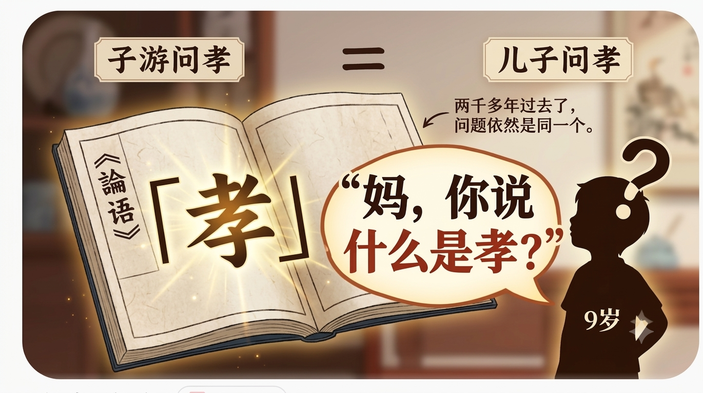

📖 从“被动背诵”到“主动发问”：读完《论语》后的哲学级追问 💡
郑承刚思想成长手册 · 哲理篇（ Chapter 27 ）
| ⏰ 【时间】：2026年09月17日 晚间 | 🌍 【地点】：书房 · 陪背《论语》现场 |
| 📱 【情境】：背完《论语·为政》“子游问孝”后的主动提问与思辨 | 📍 【记录人】：被儿子的提问深度震撼到的妈妈 |
🌱 【触发事件】：
今晚陪你背完《论语·为政》“子游问孝”这一章。你没有停留在顺畅背诵完文本的成就感里，而是合上书后，非常认真地抛出了一个底层哲学问题：“妈，你说什么是孝？”正是这个灵魂发问，开启了一场关于时代、生命品质与尊严的精彩对话。
今晚陪你背完《论语·为政》“子游问孝”这一章。你没有停留在顺畅背诵完文本的成就感里，而是合上书后，非常认真地抛出了一个底层哲学问题：“妈，你说什么是孝？”正是这个灵魂发问，开启了一场关于时代、生命品质与尊严的精彩对话。

“妈，你说什么是孝？” （合上书，认真地发问）
“我觉得每个时代每个个体的孝是不一样的。”
“你说。”
“比如说古代，养活父母就是孝；而现在对于我来说，不需要你们养，你们过好自己的生活就是孝，具体情况具体分析。”
“妈，我悟了！” （眼神放光，语气十分急切）
“怎么悟的？” （好奇地看着你）
“就是以后你生病了，即使抢救回来也没有生活质量了，就不要抢救了，这也是一种孝，否则就不孝了！”
“对！因为你违背了我的意愿了。看在你悟了的份上，这篇《论语》算你完美通关！” （欣慰又赞赏）
💡 【妈妈的架构师注解 · 从“记诵”到“探寻本质”】
1. 最珍贵的是“提出真问题”： 大多数孩子背完书，任务就结束了。但你读完《论语》后，能主动追问“什么是孝”，这说明你没有把经典当成死板的文字，而是当作可以探讨的“思想框架”。这种批判性思考与发问的能力，比背熟文本珍贵千百倍。
2. 逻辑建构与概念解耦： 听到妈妈说“不同时代定义不同”后，你迅速消化并完成了逻辑延伸——将“孝”与“生命的质量与尊严”挂钩，得出了“尊重意愿、不盲目抢救才是大孝”的硬核结论。
3. 真正读懂了古人的“神”： 孔子当年答子游“不敬，何以别乎”，重点也是在于“心与尊严”。你的这一问一悟，直接跨越千年与古人完成了神交。
2. 逻辑建构与概念解耦： 听到妈妈说“不同时代定义不同”后，你迅速消化并完成了逻辑延伸——将“孝”与“生命的质量与尊严”挂钩，得出了“尊重意愿、不盲目抢救才是大孝”的硬核结论。
3. 真正读懂了古人的“神”： 孔子当年答子游“不敬，何以别乎”，重点也是在于“心与尊严”。你的这一问一悟，直接跨越千年与古人完成了神交。
💖 【妈妈心语】
亲爱弟弟，今晚背完书后，你脱口而出的那一句“妈，你说什么是孝？”，是妈妈听过最动听的追问。
学习最怕的是“有脑无心”的死记硬背。你能主动停下来，去探寻一个传承了几千年的概念在今天的真正含义，这种敢于思考、敢于发问的气魄，就是“架构师思维”在人文领域的最好展现。
更让妈妈惊喜的是，你不仅敢问，还能瞬间“顿悟”——理解了真正的爱与孝，不是道德绑架，也不是自以为是的付出，而是对另一个人生命尊严的极度尊重。儿子，只要你一直保持这种“不盲从、求本质、敢发问”的思考习惯，这世上的万卷书，都将成为你滋养智慧的养分！
学习最怕的是“有脑无心”的死记硬背。你能主动停下来，去探寻一个传承了几千年的概念在今天的真正含义，这种敢于思考、敢于发问的气魄，就是“架构师思维”在人文领域的最好展现。
更让妈妈惊喜的是，你不仅敢问，还能瞬间“顿悟”——理解了真正的爱与孝，不是道德绑架，也不是自以为是的付出，而是对另一个人生命尊严的极度尊重。儿子，只要你一直保持这种“不盲从、求本质、敢发问”的思考习惯，这世上的万卷书，都将成为你滋养智慧的养分！
🎨 【互动留白 · 少年与经典的对话】
📝 弟弟，学习最精彩的瞬间永远不是“我背会了”，而是“我开始发问了”。未来无论读什么书，请写下你最想向这个世界发问的下一个问题：